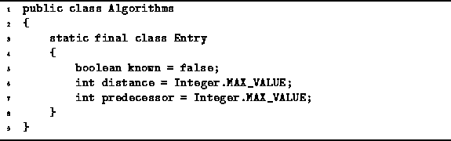

Data Structures and Algorithms
with Object-Oriented Design Patterns in Java
Data Structures and Algorithms
with Object-Oriented Design Patterns in Java
The implementation of Dijkstra's algorithm described below
uses the Entry structure declared in Program  .
Each Entry instance has three fields,
known, distance, and predecessor,
which correspond to the variables
.
Each Entry instance has three fields,
known, distance, and predecessor,
which correspond to the variables
 ,
,  , and
, and  , respectively.
, respectively.

Program: GraphAlgorithms Entry class.
In each pass of its operation, Dijkstra's algorithm selects from the set of vertices for which the shortest-path is not yet known the one with the smallest tentative distance. Therefore, we use a priority queue to represent this set of vertices.
The priority assigned to a vertex is its tentative distance.
The class Association class introduced in Program
is used to associate a priority with a given vertex instance.
 Copyright © 1998 by Bruno R. Preiss, P.Eng. All rights reserved.
Copyright © 1998 by Bruno R. Preiss, P.Eng. All rights reserved.